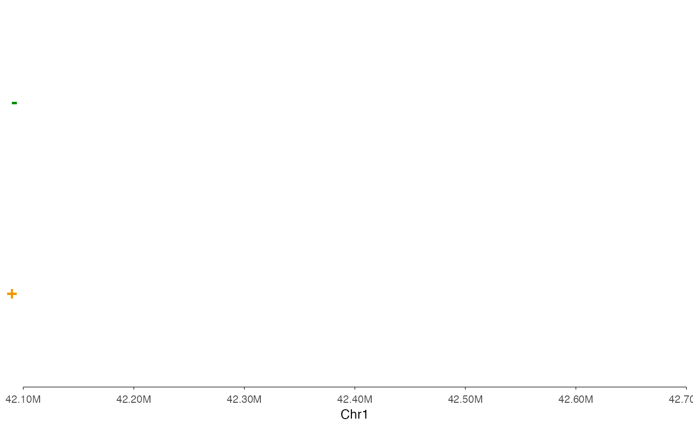
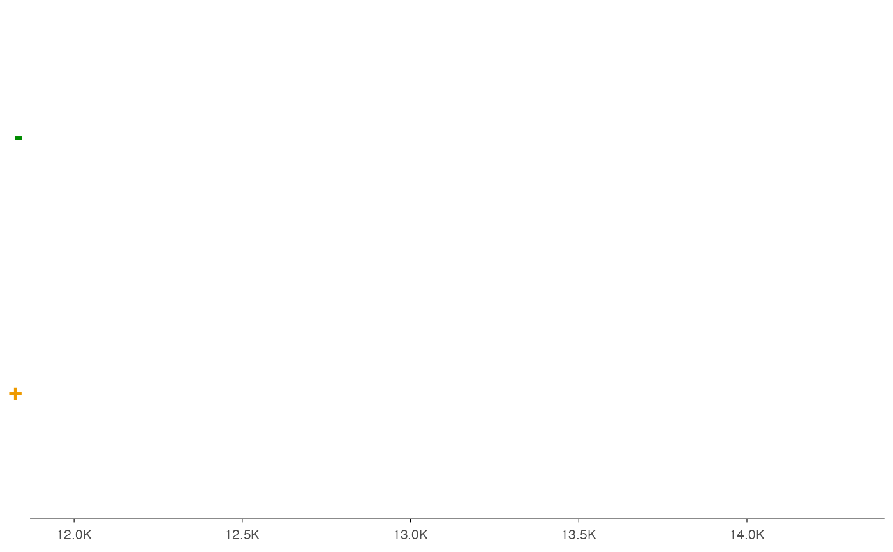

This function creates a gene track visualization from genomic annotations, supporting various input formats including GTF/GFF files, TxDb objects, and data frames. It automatically handles gene structure visualization with exons, introns, and strand information.
By default, when y = "strand", genes are colored by strand: plus strand
uses "darkgreen" and minus strand uses "orange2". To use uniform colors
instead, explicitly set exon_color, exon_fill, and intron_color.
Usage
ez_gene(
data,
region = NULL,
gene = NULL,
gene_db = NULL,
org_db = NULL,
extend = 0.1,
extend_type = c("proportion", "bp"),
exon_height = 0.2,
intron_width = 0.6,
exon_color = NULL,
exon_fill = NULL,
intron_color = NULL,
gene_id = "gene_id",
gene_name = "gene_name",
y = "strand",
label = "gene_name",
label_size = 3,
label_color = NULL,
label_style = c("auto", "simple", "repel", "none"),
max_labels = NULL,
label_priority = "length",
repel_args = list(),
border = FALSE,
label_chr = TRUE,
...
)Arguments
- data
Input data source, which can be:
A file path to a GTF/GFF file
A TxDb object from the GenomicFeatures package
A data frame with gene annotation data
- region
Genomic region to display in the format "chr:start-end". Example: "chr1:1000000-2000000". Either
regionorgene(withgene_db) must be provided.- gene
Gene name/symbol to look up (e.g., "PTPRC", "TP53"). When provided, the region is automatically determined from the gene coordinates in
gene_db. Eitherregionorgenemust be provided.- gene_db
TxDb object for gene coordinate lookup when using
geneparameter. Can be the same asdataifdatais also a TxDb.- org_db
Optional OrgDb object for gene symbol mapping. If NULL (default), auto-detects available OrgDb packages.
- extend
Numeric. Amount to extend the region beyond the gene body when using
geneparameter. Default: 0.1 (10% of gene length on each side).- extend_type
How to interpret
extend: "proportion" (relative to gene length) or "bp" (absolute base pairs). Default: "proportion".- exon_height
Relative height of exons (0 to 1). Default: 0.2
- intron_width
Line width for introns. Default: 0.6
- exon_color
Border color for exons. Default: NULL (uses strand-based colors when
y = "strand", otherwise "gray50")- exon_fill
Fill color for exons. Default: NULL (uses strand-based colors when
y = "strand", otherwise "gray50")- intron_color
Color for intron lines. Default: NULL (uses strand-based colors when
y = "strand", otherwise "gray50")- gene_id
Column name for gene identifiers. Default: "gene_id"
- gene_name
Column name for gene symbols/names. Default: "gene_name"
- y
Column name for the y-axis grouping variable. Default: "strand"
- label
Column name to use for text labels. If NULL (default), no labels are displayed. Set to a column name (e.g., "gene_name") to show labels.
- label_size
Size of text labels. Default: 3
- label_color
Color of text labels. If NULL (default), uses strand-based colors when
y = "strand", otherwise uses exon_fill color.- label_style
Strategy for handling overlapping labels. Options:
"auto" (default): Uses ggrepel if available, otherwise check_overlap
"simple": Standard geom_text with no overlap handling
"repel": Force use of ggrepel (errors if not installed)
"none": No labels displayed
- max_labels
Maximum number of labels to display. NULL (default) shows all. When set, labels are filtered based on label_priority.
- label_priority
Priority criterion for filtering labels when max_labels is set. Options: "length" (default, prioritizes longer genes), "name" (alphabetical), or a column name in the data to sort by.
- repel_args
Named list of additional arguments passed to geom_text_repel() when label_style = "repel" or "auto" (with ggrepel installed). Default behavior uses horizontal-only repositioning (
direction = "x") with no connecting lines (segment.color = NA). To show connecting lines, uselist(segment.color = "gray50"). Override direction withlist(direction = "both")for vertical repositioning too. Other useful options:max.overlaps,force,box.padding,point.padding.- border
Logical. If TRUE, adds a black border around the plot panel. Default: FALSE
- label_chr
Logical. If
TRUE(default), labels the x-axis with the chromosome name (e.g., "Chr1"). Set toFALSEto suppress the x-axis label.- ...
Additional arguments passed to
geom_gene(). Note thatcolorandcolourarguments are ignored; useexon_color,exon_fill, andintron_colorinstead.
Details
The function automatically processes different input types:
For GTF/GFF files: Uses rtracklayer to import and process the data
For TxDb objects: Extracts gene models using GenomicFeatures
For data frames: Expects columns for chromosome, start, end, strand, and type
The visualization includes:
Exons as filled rectangles
Introns as connecting lines
Strand information with arrowheads
Automatic y-axis separation by the specified y variable
Label Overlap Handling:
The function provides flexible strategies for managing overlapping gene labels:
label_style = "auto": Automatically uses ggrepel if installed, otherwise applies check_overlap to hide overlapping labelslabel_style = "simple": Standard text labels with no overlap handlinglabel_style = "repel": Uses ggrepel to reposition labels. By default, labels are repositioned horizontally only (direction = "x") with no connecting lines (segment.color = NA) to maintain a clean appearance while keeping labels horizontally aligned. This can be changed viarepel_args.label_style = "none": Disables all labels
When many genes are present, use max_labels to limit the number of labels shown,
prioritized by label_priority (gene length by default).
Examples
# From a data frame
data(example_genes)
ez_gene(example_genes, "chr1:11869-14409")
#> Warning: Ignoring unknown parameters: `arrow_length`, `arrow_type`, `exon_colour`,
#> `intron_colour`, and `clip_to_region`
#> Warning: Ignoring unknown aesthetics: fill
#> Scale for colour is already present.
#> Adding another scale for colour, which will replace the existing scale.
#> Warning: Vectorized input to `element_text()` is not officially supported.
#> ℹ Results may be unexpected or may change in future versions of ggplot2.
#> Warning: Removed 5 rows containing missing values or values outside the scale range
#> (`geom_text_repel()`).
 # Limit labels to top 5 longest genes
ez_gene(example_genes, "chr1:42100000-42700000", max_labels = 5)
#> Warning: Ignoring unknown parameters: `arrow_length`, `arrow_type`, `exon_colour`,
#> `intron_colour`, and `clip_to_region`
#> Warning: Ignoring unknown aesthetics: fill
#> Scale for colour is already present.
#> Adding another scale for colour, which will replace the existing scale.
#> Warning: Vectorized input to `element_text()` is not officially supported.
#> ℹ Results may be unexpected or may change in future versions of ggplot2.
#> Warning: Removed 5 rows containing missing values or values outside the scale range
#> (`geom_text_repel()`).
# Limit labels to top 5 longest genes
ez_gene(example_genes, "chr1:42100000-42700000", max_labels = 5)
#> Warning: Ignoring unknown parameters: `arrow_length`, `arrow_type`, `exon_colour`,
#> `intron_colour`, and `clip_to_region`
#> Warning: Ignoring unknown aesthetics: fill
#> Scale for colour is already present.
#> Adding another scale for colour, which will replace the existing scale.
#> Warning: Vectorized input to `element_text()` is not officially supported.
#> ℹ Results may be unexpected or may change in future versions of ggplot2.
#> Warning: Removed 5 rows containing missing values or values outside the scale range
#> (`geom_text_repel()`).
 # Use ggrepel for smart label positioning (if installed)
if (FALSE) { # \dontrun{
# Default: horizontal-only repositioning, no connecting lines
ez_gene(example_genes, "chr1:42100000-42700000", label_style = "repel")
# Show connecting lines to original position
ez_gene(example_genes, "chr1:42100000-42700000",
label_style = "repel",
repel_args = list(segment.color = "gray50"))
# Allow both horizontal and vertical repositioning
ez_gene(example_genes, "chr1:42100000-42700000",
label_style = "repel",
repel_args = list(direction = "both"))
# Custom repel settings for denser regions
ez_gene(example_genes, "chr1:42100000-42700000",
label_style = "repel",
repel_args = list(max.overlaps = 30, force = 3))
} # }
# Hide overlapping labels automatically
ez_gene(example_genes, "chr1:42100000-42700000", label_style = "auto")
#> Warning: Ignoring unknown parameters: `arrow_length`, `arrow_type`, `exon_colour`,
#> `intron_colour`, and `clip_to_region`
#> Warning: Ignoring unknown aesthetics: fill
#> Scale for colour is already present.
#> Adding another scale for colour, which will replace the existing scale.
#> Warning: Vectorized input to `element_text()` is not officially supported.
#> ℹ Results may be unexpected or may change in future versions of ggplot2.
#> Warning: Removed 5 rows containing missing values or values outside the scale range
#> (`geom_text_repel()`).
# Use ggrepel for smart label positioning (if installed)
if (FALSE) { # \dontrun{
# Default: horizontal-only repositioning, no connecting lines
ez_gene(example_genes, "chr1:42100000-42700000", label_style = "repel")
# Show connecting lines to original position
ez_gene(example_genes, "chr1:42100000-42700000",
label_style = "repel",
repel_args = list(segment.color = "gray50"))
# Allow both horizontal and vertical repositioning
ez_gene(example_genes, "chr1:42100000-42700000",
label_style = "repel",
repel_args = list(direction = "both"))
# Custom repel settings for denser regions
ez_gene(example_genes, "chr1:42100000-42700000",
label_style = "repel",
repel_args = list(max.overlaps = 30, force = 3))
} # }
# Hide overlapping labels automatically
ez_gene(example_genes, "chr1:42100000-42700000", label_style = "auto")
#> Warning: Ignoring unknown parameters: `arrow_length`, `arrow_type`, `exon_colour`,
#> `intron_colour`, and `clip_to_region`
#> Warning: Ignoring unknown aesthetics: fill
#> Scale for colour is already present.
#> Adding another scale for colour, which will replace the existing scale.
#> Warning: Vectorized input to `element_text()` is not officially supported.
#> ℹ Results may be unexpected or may change in future versions of ggplot2.
#> Warning: Removed 5 rows containing missing values or values outside the scale range
#> (`geom_text_repel()`).

# No labels
ez_gene(example_genes, "chr1:11869-14409", label_style = "none")
#> Warning: Ignoring unknown parameters: `arrow_length`, `arrow_type`, `exon_colour`,
#> `intron_colour`, and `clip_to_region`
#> Warning: Ignoring unknown aesthetics: fill
#> Warning: Vectorized input to `element_text()` is not officially supported.
#> ℹ Results may be unexpected or may change in future versions of ggplot2.

if (FALSE) { # \dontrun{
# Using gene name for region lookup
library(TxDb.Hsapiens.UCSC.hg38.knownGene)
txdb <- TxDb.Hsapiens.UCSC.hg38.knownGene
ez_gene(txdb, gene = "PTPRC", gene_db = txdb)
} # }